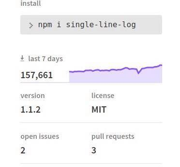
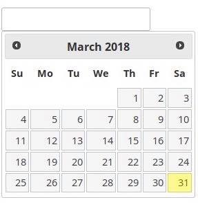

building interactive cli tools
but... you know... 🌟 smarter 🤓
@mafintosh 🇩🇰
author of 650+ modules
write lots of cli apps
cli apps are neat
🧚🏻 lightweight
🤖 automatable
run them on other computers using ssh
node was made for server apps 🖨️
but is actually great for cli 💻
#!/usr/bin/env node
console.log(
Number(process.argv[2]) +
Number(process.argv[3])
)
what about long running programs? 🏃♀️
setInterval(function () {
console.log('time is ', new Date())
}, 1000)
2018-03-30T15:16:07.831Z
2018-03-30T15:16:08.844Z
2018-03-30T15:16:07.831Z
2018-03-30T15:16:08.844Z
2018-03-30T15:16:09.829Z
we're gonna need a bigger screen 🤔
would be cool to update the text in-place.
ANSI to the rescue ⛑️
ANSI is magic chars you can print to make your terminal ... do stuff
'\033[' + {ansi-code}
\033[5m\033[0m
setInterval(function () {
console.log('\033[2Jtime is ', new Date())
}, 1000)
npm install single-line-log
const log = require('single-line-log')
setInterval(function () {
log('time is ' + new Date())
}, 1000)

simple, easy, works
updating the screen is expensive 💸
leads to bad ux
breaks copy-paste
(demo)
solutions
make component based frameworks
ncurses etc
great, but lots of buy in
web frontend had the same journey
remember jquery ui?

lots of state, lots of coupling
today most webdev uses a virtual dom
react
render your entire application virtually
diff with the dom, make minimal updates
made things easy to write
easy to test
fast enough 🤷
back to cli
virtual dom is just a string
use ANSI to produce a diff with prev output
npm install ansi-diff
const diff = require('ansi-diff')()
let out = diff.update('hello world')
console.log(out) // 'hello'
out = diff.update('hello world')
console.log(out) // empty
out = diff.update('hello WORLD')
console.log(out) // {ansi-to-x5}+'WORLD'
produces a close to minimal diff
cheap to text diff
less flicker
great for ssh
copy-paste works
(demo)
components are just strings
(demo)
accepting interactive input can be tricky
have to use "raw mode 🍣" on stdin
then parse the raw input
npm install neat-input
const input = require('neat-input')()
input.on('enter',
line => console.log('line:', line)
)
input.on('update',
() => console.log('partial:', input.line())
)
combine ansi-diff and neat-input to make cli apps in no time
npm install diffy
const diffy = require('diffy')()
const trim = require('diffy/trim+newline')
setInterval(() => diffy.render(), 100)
diffy.render(function() {
return trim(`
hello ...
time is ${new Date()}
that is all
`)
})
// bundles neat-input
const input = require('diffy/input')()
(demo)
(more demos)
can diff tiny terminals
supports terminal resize
can diff colored output
thank you